✅ Probat
Afirmații susținute de dovezi verificabile. Sursele sunt lângă fiecare, ca să le puteți controla singuri.
783 verificări, cele mai noi întâi. Vezi și: ❌ Contrazis · ⚠️ Contestat · 🔍 În verificare
Ungaria e de acord cu clusterul 3 pentru R. Moldova, dar UE refuză să separe calea Chișinăului de a Kievului — ambele clustere rămân blocate
Pe 1 septembrie 2026, la reuniunea grupului de lucru al Consiliului UE pentru extindere (COELA), Ungaria a refuzat din nou să aprobe rezultatele evaluării…
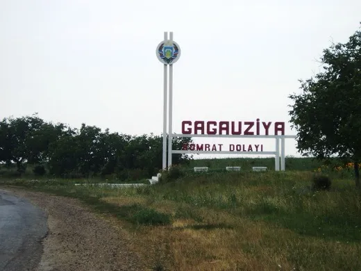
CEC fixează data: Găgăuzia își alege bașcanul și Adunarea Populară pe 15 noiembrie, după ce Comratul nu a decis singur
Comisia Electorală Centrală a stabilit pe 1 septembrie 2026 ca alegerile pentru funcția de bașcan al UTA Găgăuzia și pentru Adunarea Populară să aibă loc pe…
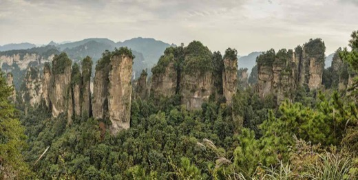
Xinhua anunță că solarul a depășit cărbunele în China „pentru prima dată” — dar doar la capacitatea instalată, nu la electricitatea produsă efectiv
📡 Administrația Națională de Energie a Chinei (NEA) a anunțat pe 1 septembrie 2026, prin agenția de stat Xinhua, că la sfârșitul lunii iulie capacitatea…
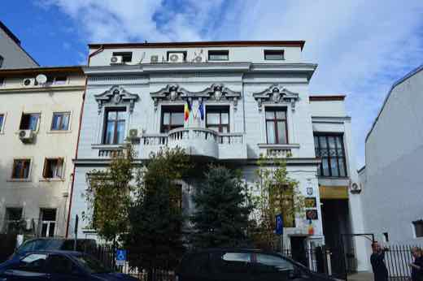
AEP începe controlul la marile partide de la 1 septembrie; AUR intră la verificare abia din octombrie, la cererea proprie
Autoritatea Electorală Permanentă (AEP) a început marți, 1 septembrie 2026, misiuni de control la activitatea financiară din 2025 a PSD, PNL, USR, SOS…
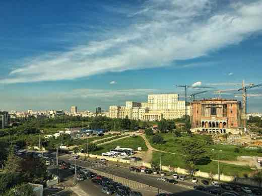
Camera Deputaților scoate PNL și USR din Biroul Permanent, cu voturile AUR și SOS; liberalii și useriștii merg la CCR
Camera Deputaților a votat marți, 1 septembrie 2026, noua componență a Biroului Permanent pentru sesiunea de toamnă: două posturi de secretar au trecut de la…
Un diplomat american preia Misiunea OSCE la Chișinău și devine mediator în dosarul transnistrean
Christopher W. Smith, diplomat american de carieră, a preluat pe 31 august 2026 conducerea Misiunii OSCE în Republica Moldova, succedând-o pe ambasadoarea…

Administrația Trump pregătește minimum 25 de milioane de dolari pentru societatea civilă conservatoare din Europa; Franța avertizează asupra ingerinței străine
Agenția Reuters relatează, pe baza unor surse, că Departamentul de Stat american pregătește un pachet de finanțare de cel puțin 25 de milioane de dolari…

Deficitul bugetar a scăzut la 2,34% din PIB în 7 luni, dar costul dobânzilor la datoria publică a crescut cu 26,5% — și înghite aproape tot deficitul
Ministerul Finanțelor a anunțat că deficitul bugetar a scăzut de la 3,99% din PIB (ianuarie–iulie 2025) la 2,34% din PIB (ianuarie–iulie 2026), pe fondul…
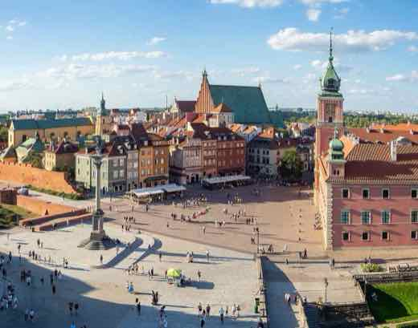
Polonia deschide o anchetă de terorism după un incendiu la o fabrică de drone care aprovizionează Ucraina — autorul rămâne neidentificat
În noaptea de 30 spre 31 august 2026, a izbucnit un incendiu la fabrica WB Electronics din Skarżysko-Kamienna, care produce componente pentru dronele armatei…
Israel și Grecia au semnat un contract de apărare de 3 miliarde de euro — cel mai mare din relația bilaterală, spune Ministerul israelian al Apărării
🌍 Israel și Grecia au semnat luni, 31 august 2026, la sediul Ministerului israelian al Apărării din Tel Aviv, un contract de 3 miliarde de euro (aproximativ…
Global Times pune contracția PMI-ului chinez pe seama vremii extreme. Datele oficiale arată a doua lună consecutivă sub pragul de creștere, cu cererea internă tot slabă
Biroul Național de Statistică al Chinei (NBS) a anunțat luni, 31 august 2026, un PMI manufacturier de 49,8 pentru august — în urcare față de 49,2 în iulie…
SUA lovesc Insula Larak după o lună de calm; Garda Revoluționară pretinde „daune grele” în Iordania și EAU — Amman și Abu Dhabi spun altceva
Duminică, 30 august 2026, CENTCOM a lovit două lansatoare ale Gărzii Revoluționare Iraniene (IRGC) de pe Insula Larak, în sudul Iranului — prima acțiune…
Trump anunță „cel mai mare acord petrolier din istorie” cu Venezuela — durata concesiunii, operatorul privat și legalitatea rămân disputate
Donald Trump a anunțat pe 29 august 2026 un acord prin care o companie nouă, cu capital american, ar urma să controleze 55% din producția a 17 zăcăminte…
Concertul de Ziua Independenței a costat aproape 10 milioane de lei, fără licitație publică. Guvernul spune că a „redus costurile cu 21%”
O investigație RISE Moldova, publicată pe 29 august 2026, a arătat că bugetul concertului de 35 de ani de independență a crescut de la 500.000 la 10 milioane…
Premierul Tofan: „Nu cred că vom putea ajuta 80% dintre gospodării” cu compensații la energie, în iarna care vine
Pe 25 august 2026, premierul Vasile Tofan a spus că statul ar avea nevoie de 3,8 miliarde de lei pentru a compensa integral scumpirile la energie din iarna…
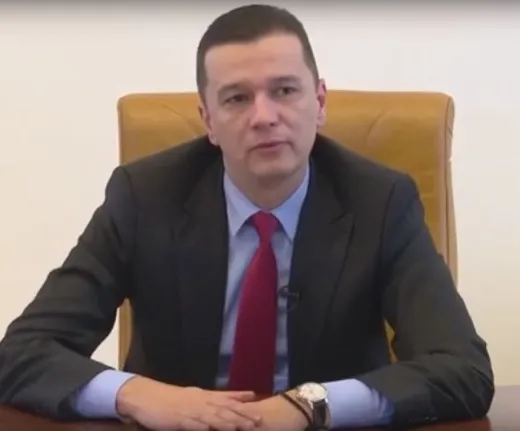
PSD spune că are voturile pentru un guvern minoritar cu Grindeanu premier, în ziua în care Nicușor Dan pregătește consultările pentru 1 septembrie
La ședința conducerii PSD de luni, 31 august 2026, de la Sinaia, secretarul general Claudiu Manda a spus că partidul „are” voturile pentru un guvern…
Guvernul amână închiderea centralelor pe lignit de la Turceni și Craiova, deși PNRR cerea oprirea lor pe 31 august
Executivul a decis vineri, 28 august 2026, să mențină în funcțiune grupurile pe lignit de la Craiova (până în trimestrul al doilea din 2027) și Turceni (până…
Un nou obiect aerian a intrat în spațiul Moldovei dinspre Ucraina și a revenit după nouă minute. Al patrulea incident de acest fel în august
Duminică, 30 august 2026, un obiect aerian a intrat în spațiul aerian al Republicii Moldova dinspre Ucraina, lângă satul Dnestrovsk din regiunea…
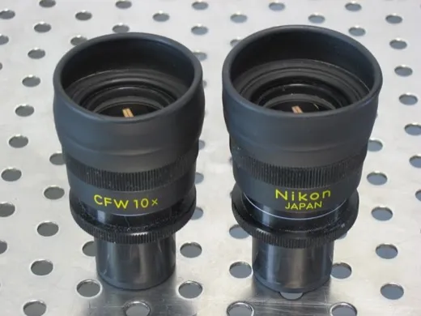
JWST a găsit un obiect nou: o „stea-gaură neagră” din zorii universului, publicată în Nature
Un studiu publicat în Nature pe 12 august 2026 descrie MoM-BH*-1, un obiect observat la 660 de milioane de ani după Big Bang: o gaură neagră de circa 100.000…
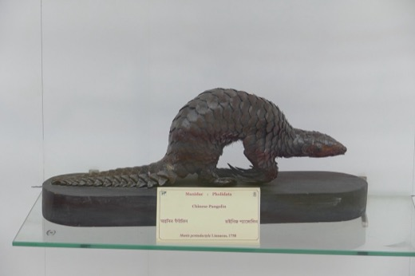
ADN dintr-un specimen de muzeu vechi de 190 de ani confirmă o specie distinctă de pangolin în Himalaya
Un studiu internațional, publicat în Communications Biology, a folosit ADN dintr-un specimen colectat în 1836 în Nepal pentru a confirma că pangolinii din…
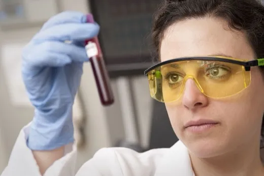
Un studiu australian: nivelul de bicarbonat din sângele americanilor a crescut odată cu CO2 din atmosferă
Doi cercetători din Australia (The Kids Research Institute Australia / Curtin University și ANU) au analizat două decenii de date medicale din SUA (NHANES)…
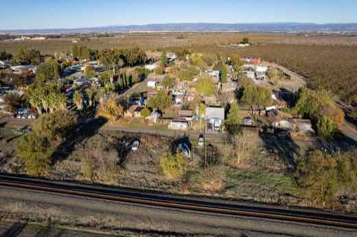
Coreea de Nord schimbă ministrul apărării — KCNA anunță că Kim Song-gi îl înlocuiește pe No Kwang-chol, iar Pak Jong-chon revine în comisia militară
📡 Agenția de stat nord-coreeană KCNA a anunțat duminică, 30 august 2026, că Kim Jong-un a decis o remaniere a conducerii militare: Kim Song-gi devine…
Siria îl numește consilier prezidențial pe fostul comandant al forțelor kurde FDS, la două zile după ce acestea s-au dizolvat ca forță militară independentă
Președintele sirian Ahmed al-Sharaa l-a numit, printr-un decret prezidențial, pe Mazloum Abdi, fostul comandant al Forțelor Democratice Siriene (FDS…

Noul ministru de Finanțe al Colombiei anunță o tăiere bugetară „istorică” de 21,9 mii de miliarde de pesos, pe fondul unui deficit de 7,8% din PIB
Miguel Gómez Martínez, ministrul de Finanțe al noului guvern colombian condus de Abelardo de la Espriella (învestit pe 7 august 2026), a anunțat o tăiere a…
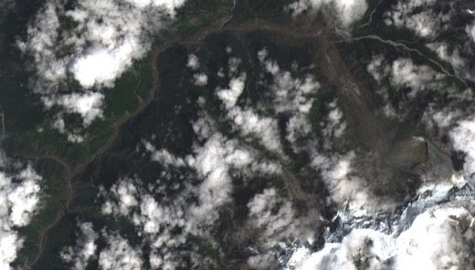
Bilanțul inundațiilor de la granița Nepal-Tibet urcă spre 800 de morți; aproape 90 de americani, printre ei pelerini ai unei fundații de yoga, printre dispăruți
Patru zile după colapsul unui gheţar care a declanșat o viitură devastatoare pe granița dintre Nepal și regiunea chineză Tibet, bilanțul confirmat a urcat la…
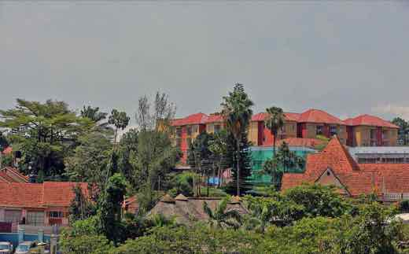
Fiul președintelui ugandez Museveni, șeful armatei, își anunță candidatura la prezidențialele din 2031
Generalul Muhoozi Kainerugaba, șeful Forțelor de Apărare ale Ugandei și fiul președintelui Yoweri Museveni (81 de ani, la putere din 1986), a anunțat pe…

Masacrul din Kenscoff, Haiti: ONU confirmă 47 de morți, 22 executați într-o biserică, peste 50 de răpiri
În noaptea de 23 spre 24 august 2026, coaliția de bande Viv Ansanm a atacat comuna Kenscoff, lângă Port-au-Prince; potrivit unui raport prezentat la ONU, cel…

Curtea Supremă a Mexicului validează fondul de pensii al lui Sheinbaum, alimentat din conturile Afore inactive
Curtea Supremă a Mexicului (SCJN) a decis în unanimitate, pe 12 august 2026, că Fondul de Pensii pentru Bunăstare — creat în 2024 și alimentat parțial din…
NASA a lansat cu succes telescopul spațial Roman, cu o rachetă Falcon Heavy
Telescopul spațial Nancy Grace Roman a decolat sâmbătă, 30 august 2026, ora 7:26 dimineața (ora Florida), de la Kennedy Space Center, cu o rachetă SpaceX…
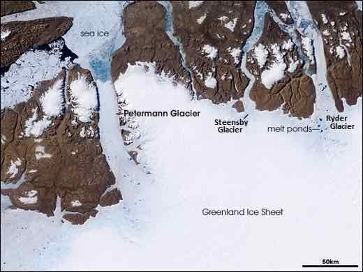
Un aisberg cât Manhattan s-a desprins din ghețarul Petermann din Groenlanda — cea mai mare pierdere din 2012
Satelitul european Sentinel-1 a surprins, pe 4 august 2026, desprinderea unei bucăți de 76 de kilometri pătrați din limba de gheață plutitoare a ghețarului…
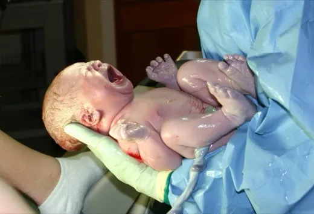
Microbiomul intestinal al mamei, sursa principală a bacteriilor din intestinul bebelușului — și un semnal timpuriu pentru eczemă
Un studiu publicat în Nature pe 12 august 2026, realizat pe 714 perechi mamă-copil din cohorta olandeză Lifelines NEXT, arată că majoritatea bacteriilor care…

Tarifele lui Trump, „lovite” de Curtea Supremă în februarie, sunt acum mai mari decât imediat după decizie — dar tot sub nivelul dinainte
Pe 20 februarie 2026, Curtea Supremă a SUA a decis, 6-3, că legea IEEPA nu îi dă președintelui puterea de a impune tarife generalizate — o înfrângere pe care…

Nicușor Dan a promulgat Legea Integrității, deși își menține obiecțiile de neconstituționalitate — Fritz are 30 de zile
Președintele a promulgat vineri, 28 august 2026, noua Lege a Integrității, deși și-a menținut argumentele din sesizarea de neconstituționalitate depusă la…
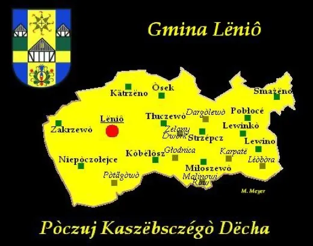
Soldați nord-coreeni au trecut din nou Linia de Demarcație Militară — a doua oară în două săptămâni, armata sud-coreeană a tras focuri de avertisment
Armata Coreei de Sud a confirmat vineri, 28 august 2026, că soldați nord-coreeni au trecut din nou, „recent”, Linia de Demarcație Militară (MDL) în sectorul…
China a scos rapid din rețelele proprii filmările cu viitura de la Gyirong, în timp ce Nepal relatează liber despre victime
Trei zile după viitura devastatoare de la granița Tibet–Nepal, presa de stat chineză (CCTV, People's Daily) a limitat sever informația despre victimele de pe…
ICE a arestat aproape 50.000 de oameni în iulie 2026 — record lunar, iar peste jumătate nu aveau cazier
Agenția americană pentru imigrație (ICE) a făcut 49.571 de arestări în iulie 2026, cel mai ridicat total lunar din al doilea mandat al lui Trump — cu 15%…
Aproape 49 de ani mai târziu, ancheta asupra morții lui Steve Biko a intrat efectiv în ședințe la Gqeberha
Ancheta (inquest) redeschisă asupra morții liderului anti-apartheid Steve Biko, mort în custodia poliției sud-africane în 1977, a intrat efectiv în ședințe…
Nepal refuzase ajutorul internațional pentru căutarea dispăruților în inundații — apoi și-a schimbat decizia, cu bilanțul urcat la 626 de morți
La trei zile după viitura de pe râul Lhende, la granița Nepal-Tibet, bilanțul oficial nepalez a urcat la 626 de morți, iar numărul australienilor dispăruți a…
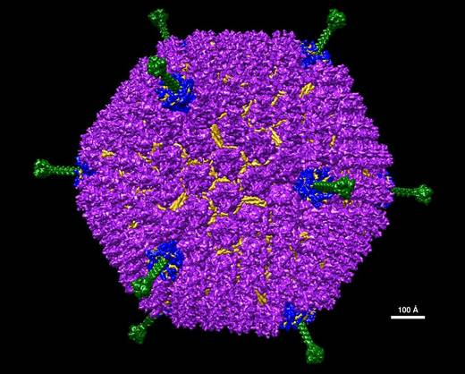
Simulări arată că planetele stâncoase s-ar fi putut forma la doar 100 de milioane de ani după Big Bang
O echipă condusă de Dr. Daniel Whalen, de la Universitatea Portsmouth, a publicat în The Astrophysical Journal Letters simulări care arată că discuri bogate…

Guvernul de la Chișinău recunoaște: majorările de salarii promise bugetarilor de la 1 septembrie vin abia din 2027
Noua Lege a salarizării în sectorul bugetar trebuia să aducă majorări de la 1 septembrie 2026. Președinta Maia Sandu a anunțat încă din 7 august că termenul…
Forumul Insulelor Pacifice nu reușește să condamne testul chinezesc de rachetă balistică — insulele mici cer ca regula să se aplice tuturor marilor puteri
Australia și Noua Zeelandă au cerut o condamnare fermă a testului chinezesc din 6 iulie 2026, cu o rachetă balistică lansată de pe submarin în Pacific. Papua…
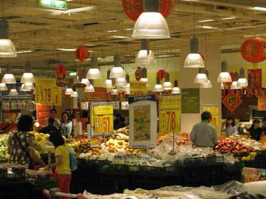
Record de nave guvernamentale chineze lângă Taiwan în 2026 — Beijingul nu comentează cifrele
Garda de Coastă a Taiwanului a raportat 244 de nave guvernamentale chineze în jurul insulei în iulie 2026 — un record — și 152 în doar primele trei săptămâni…
Liderul Hezbollah, Naim Qassem, respinge din nou acordul-cadru Liban-Israel: „e ilegitim” și cere „căderea” lui
Liderul Hezbollah, Naim Qassem, a declarat pe 28 august 2026, într-un discurs televizat pe Al-Manar, că gruparea se opune acordului-cadru Liban-Israel semnat…

BNM a urcat rata de bază la 7,5%, cea mai mare din ultimii trei ani — dar moldovenii se împrumută în continuare, la niveluri record
Comitetul executiv al Băncii Naționale a Moldovei a majorat, pe 6 august 2026, rata de bază de la 7% la 7,5% pe an — cel mai ridicat nivel din ultimii trei…
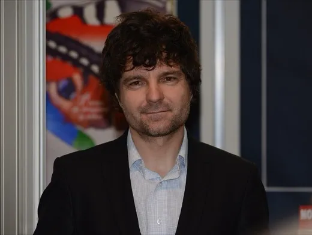
Nicușor Dan pregătește un premier independent pentru un Guvern PSD cu sprijin UDMR — nominalizare așteptată la finalul săptămânii viitoare
Președintele Nicușor Dan a declarat public, joi seara, 27 august 2026, că nu vede susținere pentru un guvern cu miniștri tehnocrați. Potrivit surselor…
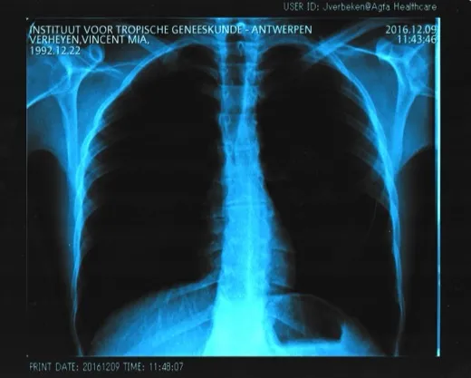
Un studiu pe zeci de milioane de pacienți leagă medicamentele GLP-1 de un risc mai mic de tuberculoză la diabetici — dar legătura slăbește în analiza restrânsă la SUA
Un studiu retrospectiv publicat pe 24 august 2026 în Nature Communications, semnat de Liao, Wu și Lai, a comparat pacienți cu diabet de tip 2 din baza de…

Raportul internațional „Starea Climei 2025” confirmă recorduri de gaze cu efect de seră, nivel al mării și căldură oceanică
Al 36-lea raport anual „Starea Climei”, publicat de NOAA cu recenzie inter pares în Bulletin of the American Meteorological Society, cu contribuția a peste…
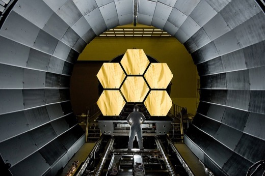
James Webb a găsit apă și praf lângă gaura neagră din centrul Căii Lactee, la doar 0,55 ani-lumină de Sagittarius A*
O echipă condusă de Universitatea din Köln a folosit telescopul spațial James Webb pentru a analiza steaua evoluată IRS 3, aflată la doar 0,55 ani-lumină de…
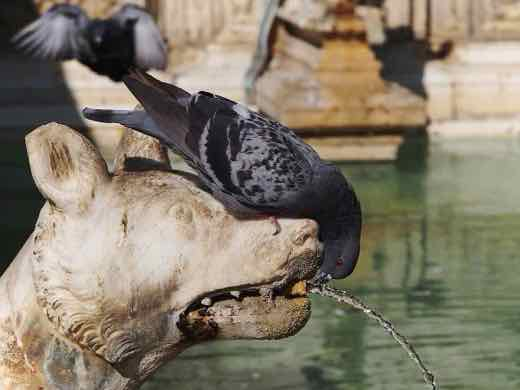
Hubble și Gaia găsesc dovada celei mai vechi fuziuni galactice din istoria Căii Lactee, acum 11,8 miliarde de ani
O echipă internațională a folosit telescopul spațial Hubble și satelitul Gaia pentru a identifica rămășițele unei galaxii pitice, botezată…
SUA, Coreea de Sud și Japonia anunță exercițiul Freedom Edge din 7-11 septembrie. Phenianul: „răspuns serios, imediat și puternic” la ce numește „mișcări ostile”
Statele Majore Reunite ale Coreei de Sud au anunțat pe 28 august 2026 exercițiul trilateral naval Freedom Edge (SUA, Coreea de Sud, Japonia), 7-11…
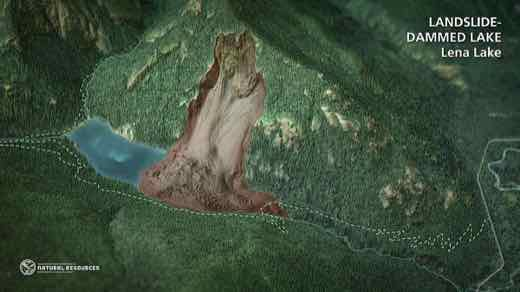
Un nou lac de baraj amenință cu o a doua viitură la granița Nepal-Tibet. Bilanțul nepalez urcă spre 470 de morți, cel chinez rămâne blocat la 3
La două zile după viitura provocată de un colaps glaciar la granița Nepal-Tibet, ministerul chinez al Resurselor de Apă SUSȚINE, prin CCTV și Global Times…
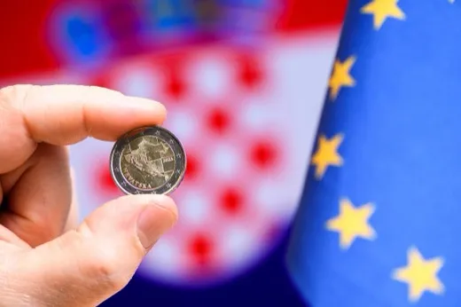
Banca centrală a Coreei de Sud majorează dobânda de referință la 3%, a doua creștere consecutivă, pe fondul inflației de bază ridicate
Consiliul de politică monetară al Băncii Coreei (BOK) a majorat pe 27 august 2026 dobânda de referință cu 0,25 puncte procentuale, de la 2,75% la 3%, a doua…

Universitatea Craiova, eliminată din Europa League de Ararat-Armenia, cu un penalty repetat în minutul 90+8
Ararat-Armenia a învins-o pe Universitatea Craiova cu 1-0 în manșa retur a play-off-ului Europa League, joi, 27 august 2026, cu un gol marcat din penalty…
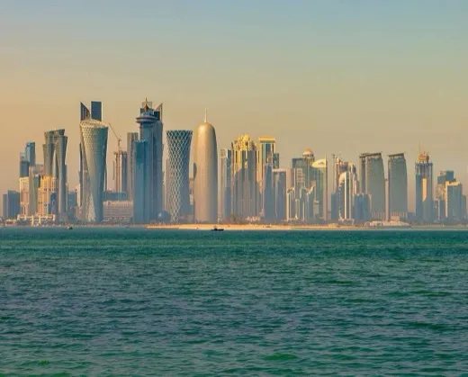
Premierul Qatarului a mers la Teheran — prima vizită la nivel înalt din Doha de la începutul războiului cu Iranul. De ce are Qatarul, mai mult ca oricine, interes să-l oprească
Șeicul Mohammed bin Abdulrahman Al Thani, premier și ministru de externe al Qatarului, a mers joi, 27 august 2026, la Teheran — prima vizită a unui oficial…
Ploi torențiale în nordul-centrul Japoniei: alertă de nivel 5 în Ishikawa și Toyama, peste 380.000 de oameni chemați să se adăpostească, fără victime raportate
Joi, 27 august 2026, ploi abundente au lovit prefecturile Ishikawa și Toyama, din regiunea Hokuriku, provocând revărsarea unor râuri și inundarea a sute de…
Alunecarea de teren de la granița Nepal-Tibet: presa de stat chineză anunță 3 morți, Nepal a ajuns la peste 390 — decalajul, doar parțial explicat
Pe 26 august 2026, colapsul unui gheţar la circa 5.200 m altitudine în Himalaya a declanșat o viitură devastatoare pe râul Lhende, la granița dintre regiunea…
Sandu, Zelenski și Nicușor Dan, întâlnire trilaterală la Chișinău: autostradă prin SAFE spre R. Moldova, în ziua în care Ucraina anunța 11 alerte de dronă și rachetă
De Ziua Independenței R. Moldova (35 de ani), președinții Maia Sandu, Volodimir Zelenski și Nicușor Dan s-au întâlnit la Chișinău. Nicușor Dan a anunțat că…
Cinci drone rusești au intrat în R. Moldova chiar de Ziua Independenței; o a șasea, dronă-momeală, s-a prăbușit lângă Basarabeasca
În noaptea de 26 spre 27 august 2026, chiar când R. Moldova împlinea 35 de ani de independență, cinci drone rusești au intrat dinspre Ucraina în spațiul ei…

Plenul Senatului aprobă, 67 la 41, comisia de anchetă pentru întâlnirea Bolojan–Tănăsescu; audierile încep azi
După o săptămână de blocaj la nivel de comisie, plenul Senatului a aprobat luni, 24 august, cu 67 de voturi pentru și 41 împotrivă, înființarea unei comisii…

Cristina Trăilă, secretar general adjunct al Guvernului, pusă sub urmărire penală de DNA în dosarul afaceristului Fănel Bogoș
Direcția Națională Anticorupție a confirmat oficial, pe 25 august 2026, că Cristina Trăilă (PNL), secretar general adjunct al Guvernului, este urmărită penal…